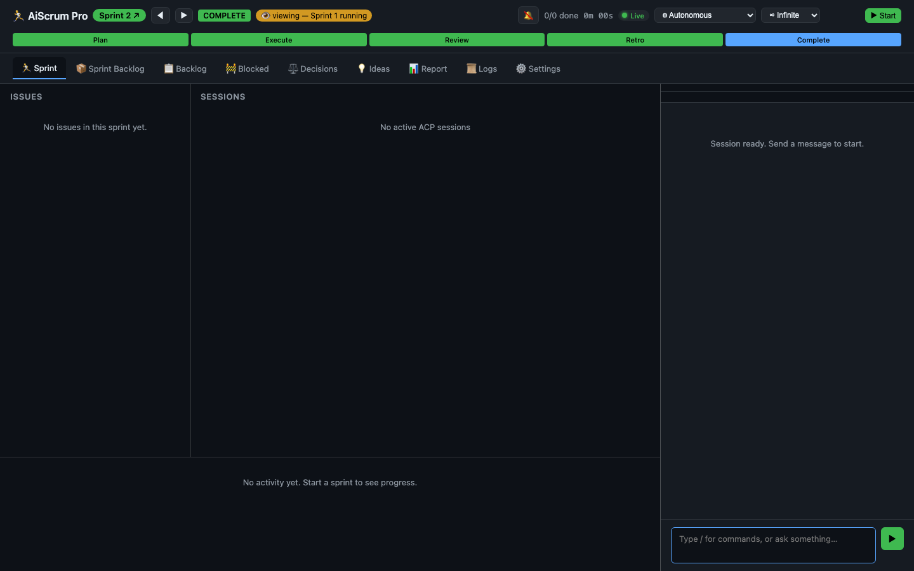
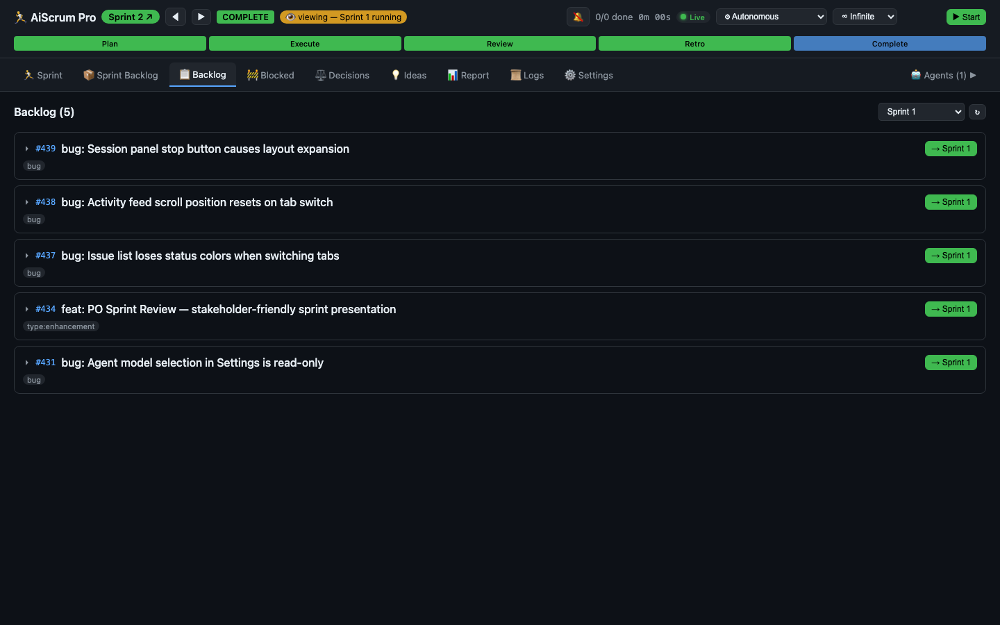
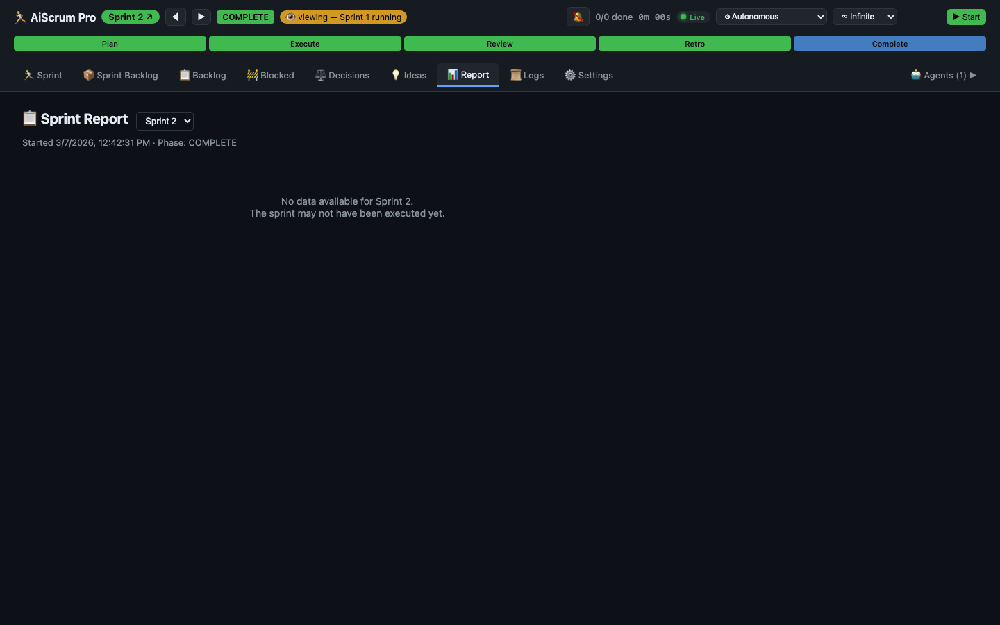
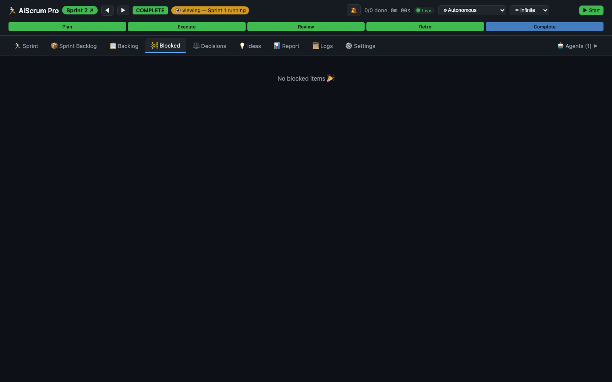
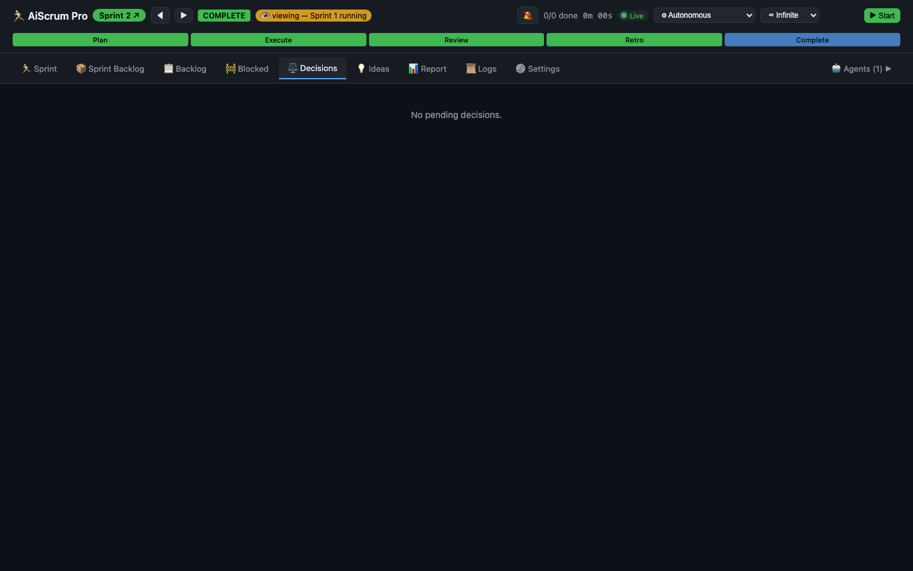
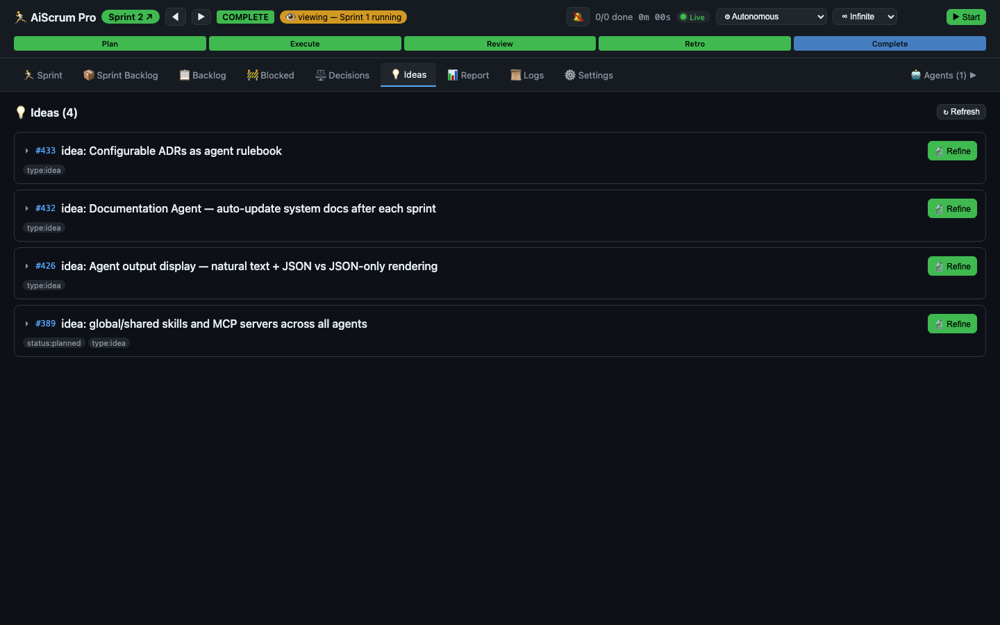
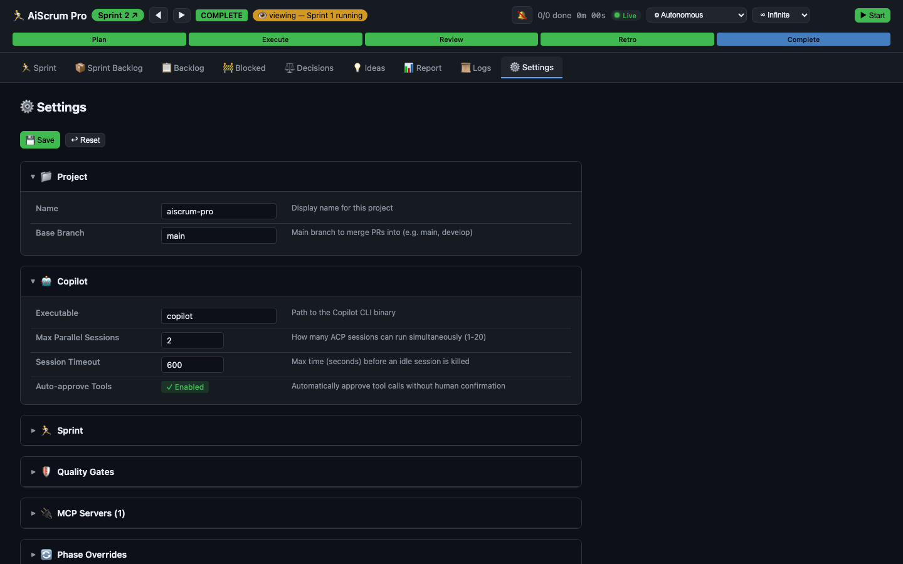
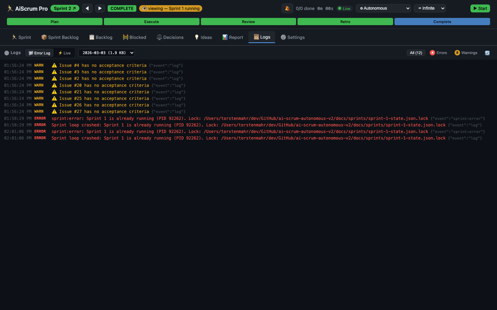
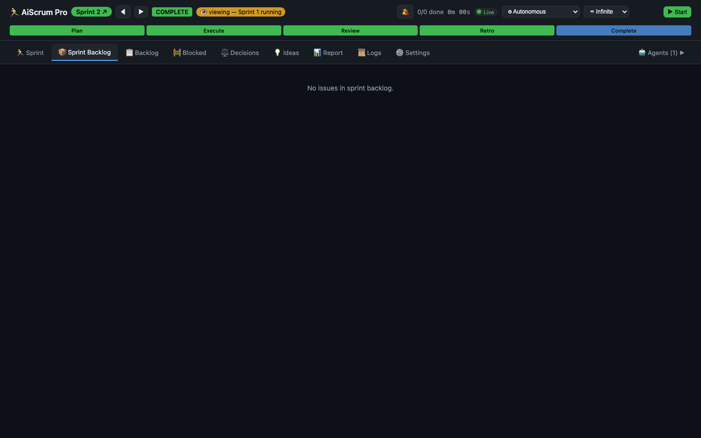

AiScrum Pro orchestrates GitHub Copilot CLI to execute complete sprint cycles — refinement, planning, parallel execution, code review, and retrospectives — with real quality gates, drift control, and escalation boundaries.
The AI-Scrum Framework defines how humans and AI collaborate — with a manifesto, ceremonies, boundaries, and escalation rules.
AiScrum Pro is the runtime that executes it. It connects to GitHub Copilot via the Agent Client Protocol and runs sprints autonomously — creating branches, writing code, running tests, opening PRs, tracking velocity, and improving its own process with each retro.
You are the Stakeholder. You set direction, drop ideas, approve deliverables. The AI team handles everything else.
Start a sprint and come back to finished, tested, reviewed code.
Ideas decomposed into concrete issues with acceptance criteria
→ICE scoring, scope selection, milestone assignment, dependency graph
→Parallel workers in isolated git worktrees, each quality-gated
→Sprint metrics, velocity tracking, deliverable summary for stakeholder
→Process improvements applied to agent prompts and workflows
A structured sprint engine with real project management, quality enforcement, and process improvement.
Multiple issues worked simultaneously via isolated git worktrees with automatic merge pipelines.
Tests exist, tests pass, lint clean, types clean, build passes, scope check, diff size — enforced on every issue.
Sprint metrics, issue completion rates, cycle time analysis. Every sprint gets smarter.
Real-time sprint control center with 9 views, live agent chat, and historical sprint navigation.
Open ad-hoc ACP sessions with pre-configured roles — researcher, planner, reviewer, challenger.
ntfy.sh integration for real-time alerts when sprints complete, issues block, or decisions are needed.
Run test sprints with separate prefix, milestones, and branches — fully isolated from production.
Automatic sprint logs, huddle notes, velocity reports, and ADR maintenance.
One Zod-validated YAML file controls the entire engine — models, gates, parallelism, merge strategy.
| Ad-hoc AI Coding | AiScrum Pro ✦ | |
|---|---|---|
| Planning | None — chat until it works | ICE-scored sprint backlog, dependency graphs |
| Execution | One issue, manually driven | Parallel workers via git worktrees |
| Quality | "It should work" | 7 enforced gates per issue |
| Memory | Lost every session | Sprint logs, velocity, issue comments, ADRs |
| Scope control | Feature chasing | Drift detection, sprint lock, escalation |
| Improvement | Static prompts | Retro-driven process evolution |
Monitor progress, chat with agents, navigate sprint history — all in one place.









Autonomous execution needs boundaries. Every one of these is built in and enforced.
Sprint scope is locked after planning. Discovered work goes to backlog, never into the current sprint. If >2 unplanned issues appear, the engine escalates immediately.
The AI decides how, never what. Strategic direction changes, ADR modifications, scope changes, and dependency additions always require stakeholder approval.
An adversarial reviewer that challenges assumptions, finds blind spots, and prevents groupthink before sprint review. The team's built-in devil's advocate.
Acceptance criteria before coding. Tests that verify behavior. PR reviewed. CI green. Issue closed with summary. No shortcuts, no exceptions.
AiScrum Pro implements the AI-Scrum Framework — an open-source methodology for human-AI software development built on real Scrum principles.
The framework defines the roles, ceremonies, boundaries, and values. AiScrum Pro is the TypeScript engine that executes them via the Agent Client Protocol.
Read the full framework →"While there is value in the items on the right, we value the items on the left more."
Open source. TypeScript. Config-driven. Your code, your rules, your repo.